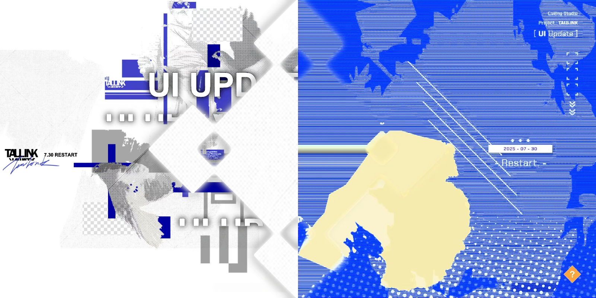

部分内容暂时未能载入。

← 单元首页
此设备未能显示三维场景。你仍可阅读、比较场景说明并留下批注。
身份来自各单元的最终选择，取牌揭示本轮结果。
摄像头只在本机识别手势。
请开启 JavaScript 后重新载入。
 THE AI AGE / A DIALOGUE WITH HANNAH ARENDT
THE AI AGE / A DIALOGUE WITH HANNAH ARENDT
THE AI AGE / A DIALOGUE WITH HANNAH ARENDT
THE AI AGE / A DIALOGUE WITH HANNAH ARENDT